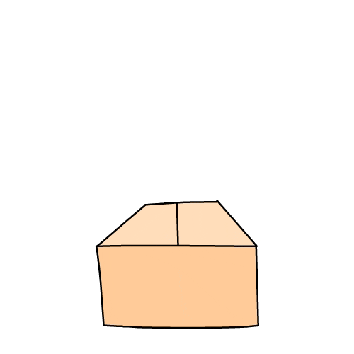

Parts of a box

- Content box: The area where your content is displayed, which can be sized using properties like width and height.
- Padding box: The padding sits around the content as white space; its size can be controlled using padding and related properties.
- Border box: The border box wraps the content and any padding. Its size and style can be controlled using border and related properties.
- Margin box: The margin is the outermost layer, wrapping the content, padding and border as whitespace between this box and other elements. Its size can be controlled using margin and related properties.
